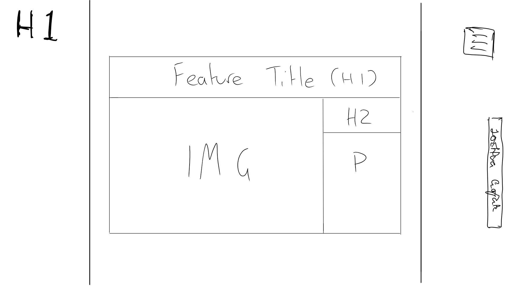
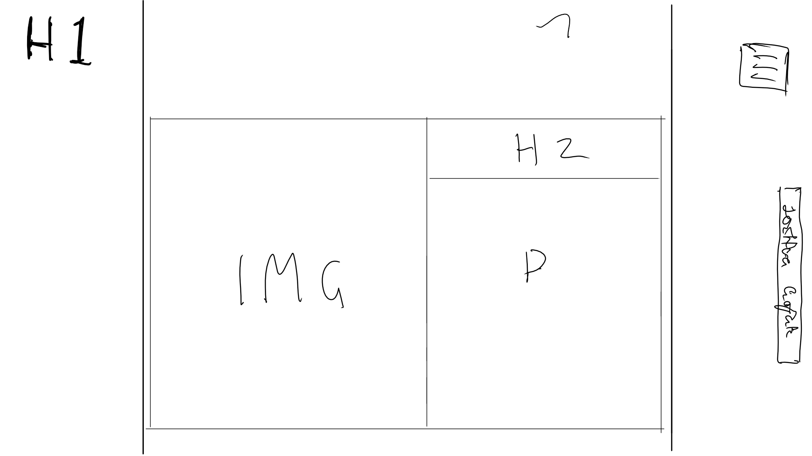
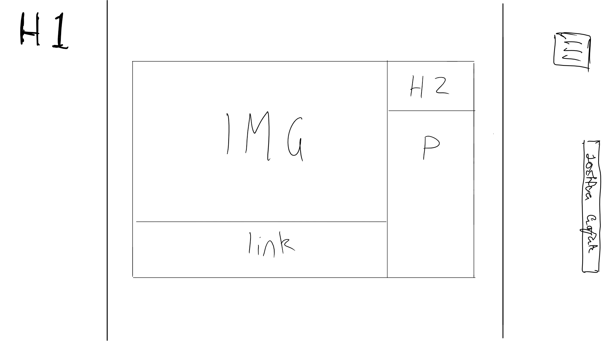
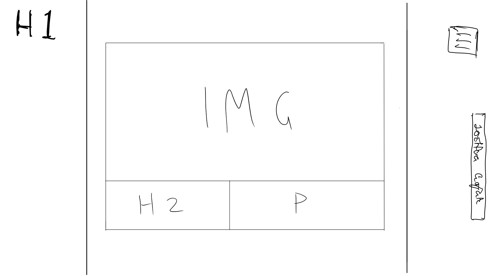
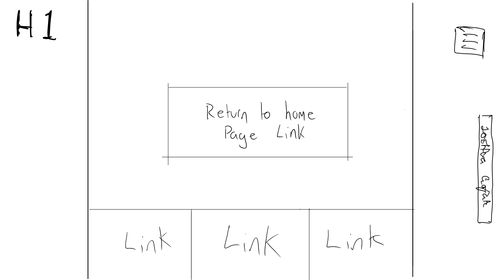

Wireframes
The developed wireframes for this blog section.
Joshua Gojak
300453323
Wireframing - Part I
Feature Section
This is the featured section, the 'WOW' part. This is supposed to be a bit more flash thean the rest of it. But who knows, it might just be easier to make each section look like this...
Wireframing - Part II
Feature Section
This is the featured section, the 'WOW' part. This is supposed to be a bit more flash thean the rest of it. But who knows, it might just be easier to make each section look like this...
Wireframing - Part III
Feature Section
This is the featured section, the 'WOW' part. This is supposed to be a bit more flash thean the rest of it. But who knows, it might just be easier to make each section look like this...
Wireframing - Part IV
Feature Section
This is the featured section, the 'WOW' part. This is supposed to be a bit more flash thean the rest of it. But who knows, it might just be easier to make each section look like this...
Wireframing - Part V
Feature Section
This is the featured section, the 'WOW' part. This is supposed to be a bit more flash thean the rest of it. But who knows, it might just be easier to make each section look like this...
Git for Designers
Feature Branch Workflow
The biggest advantage of Git is its branching capabilities. Unlike centralized version control systems, Git branches are easy to merge. This facilitates the feature branch workflow popular with many Git users.
Feature branches provide an isolated environment for every change to your codebase. When a designer wants to start working on something—no matter how big or small—they create a new branch. This ensures that the master branch always contains production-quality code.
Feature branches lend themselves to rapid prototyping. Whether your UX/UI designers want to implement an entirely new user flow or simply replace some icons, checking out a new branch gives them a sandboxed environment to play with. This lets designers see how their changes will look in a real working copy of the product without the threat of breaking existing functionality.
Using feature branches is not only more reliable than directly editing production code, but it also provides organizational benefits. They let you represent development work at the same granularity as your agile backlog.
Distributed Development
In SVN, each designer gets a working copy that points back to a single central repository. Git, however, is a distributed version control system. Instead of a working copy, each designer gets their own local repository, complete with a full history of commits.
Having a full local history makes Git fast, since it means you don’t need a network connection to create commits, inspect previous versions of a file, or perform diffs between commits.
Distributed development also makes it easier to scale your team. If someone breaks the production branch in SVN, other designers can’t check in their changes until it’s fixed. With Git, this kind of blocking doesn’t exist. Everybody can continue going about their business in their own local repositories.
And, like feature branches, distributed development creates a more reliable environment. Even if a designer obliterates their own repository, they can simply clone someone else’s and start anew.